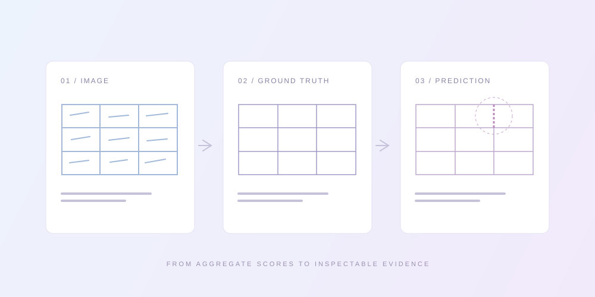

A LITTLE INTRODUCTION
开放研究交流与项目合作你好，我是子墨。
我是一名华中科技大学计科本科生，也是一个喜欢把想法做出来的人。我的兴趣交汇在文档智能、可解释 AI 与产品工程：既关心模型怎样理解世界，也关心它如何在真实场景里变得可靠、好用。
这里收录我的研究实践、软件作品和技术思考。比起停留在演示，我更在意证据能否追溯、结果能否复现、系统能否经得起实际使用。
01 / SELECTED WORK
把想法，做成作品。
从文档理解到决策支持，从原型验证到产品实现。
也在认真打磨这些
更多作品在 GitHub02 / RESEARCH EXPLORATIONS
不止看见结果， 更想理解原因。
关注复杂文档中的结构理解、识别错误与评测可靠性，让实验结论有依据、可追踪。
研究里的几个坚持
01
先建立可信基线
固定版本、输入与评测口径，再讨论方法有没有进步。
02
让每个判断有证据
把指标、原始输出和典型失败样本放在一起看。
03
区分探索与结论
把已完成的工作、实验边界和待验证的假设写清楚。
持续关注
阅读顺序建模、文档解析可靠性，以及面向真实场景的模型评测。
03 / FIELD NOTES
边做，边想，边记录。
从具体问题出发，记录可以迁移到下一次实践的思考。
04 / BEHIND THE WORK
保持好奇，也保持认真。
我喜欢从一个真实的问题开始，把“能不能做”推进到“为什么这样做、怎样验证它做对了”。从底层算法到交互界面，从一份实验记录到一个可使用的工具，完整走一遍，比只记住一个概念更让我着迷。
代码之外，我喜欢阅读、摄影与散步。观察日常，常常也是发现问题和产生想法的另一种方式。
华中科技大学
2025 — 至今计算机科学与技术 · 本科
围绕数据结构、计算机系统、程序设计与数字逻辑持续打基础，同时开展文档智能研究实践与独立软件开发。
实践中的技术栈
工具服务于问题，而不是反过来。
语言与算法
C / C++ · Python · JavaScript / TypeScript
AI 与实验
Document Parsing · Error Analysis · Model APIs
产品与工程
Flutter · Riverpod · SQLite · NestJS · PostgreSQL
开发工作流
Git · Linux · Automated Testing · CI
05 / LET’S CONNECT
下一个有意思的问题， 也许可以一起探索。
欢迎聊聊文档智能、AI 应用、研究机会或软件开发实习。也欢迎带着一个值得解决的问题来找我。
备用邮箱 · 2319597720@qq.com
一封写明来意的邮件，会是很好的开始。